Dim sum and craft beer in the open hall of an old Goan house, photographed from every angle at blue hour. Built on the 3D model of the site as it stands: the blue columns, navy balustrade, white fretwork, coffered ceiling and brick bar stay. The new layer is bottle green over brown tile, a gallery wall that tells the story of Indo-Chinese food, ivy wicker orbs, bougainvillea and fairy lights.
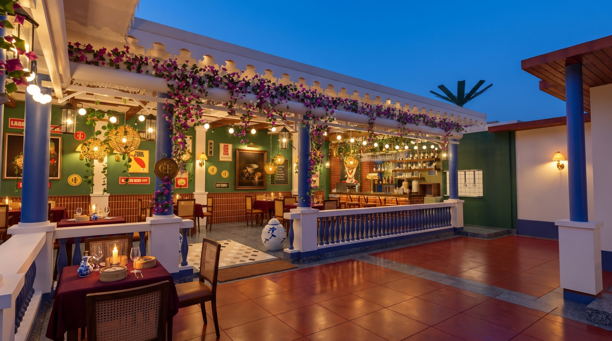
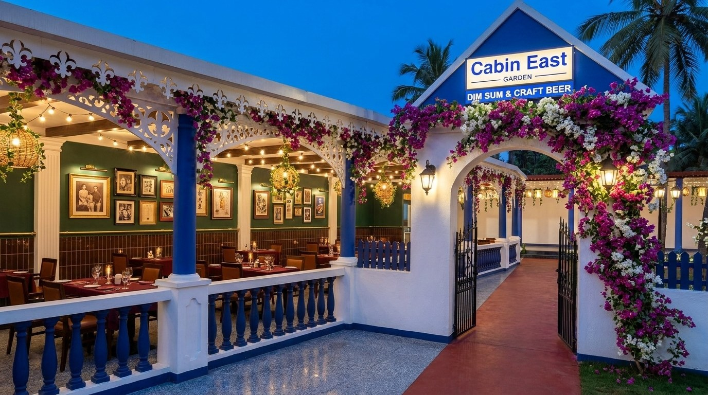
Gate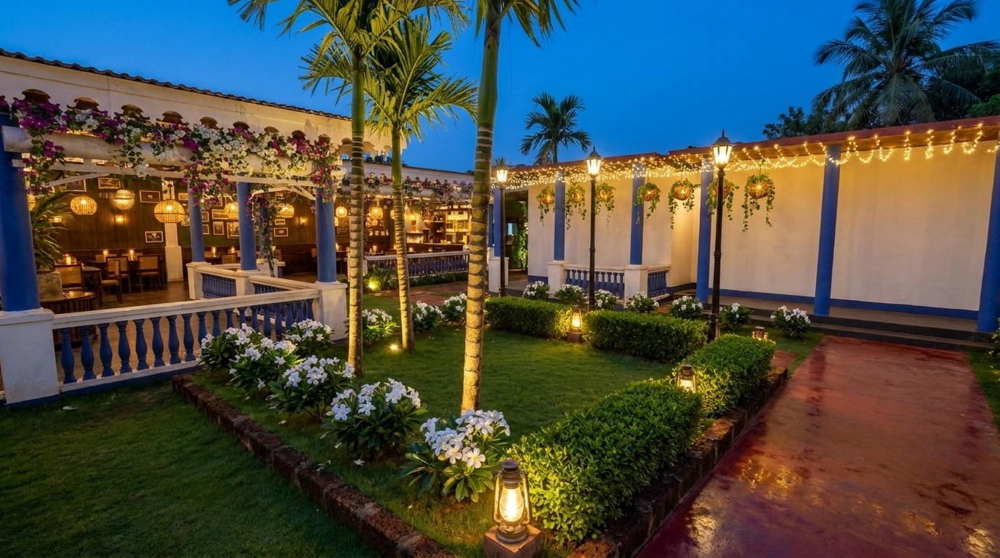
Garden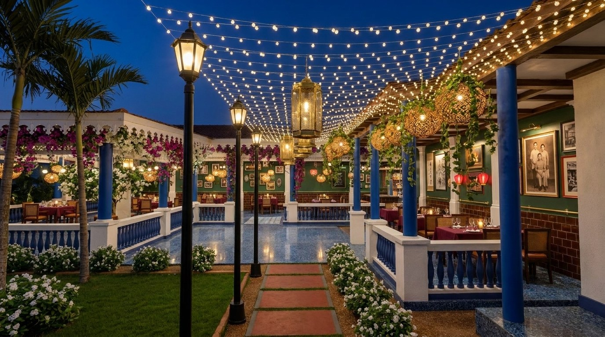
PathHall front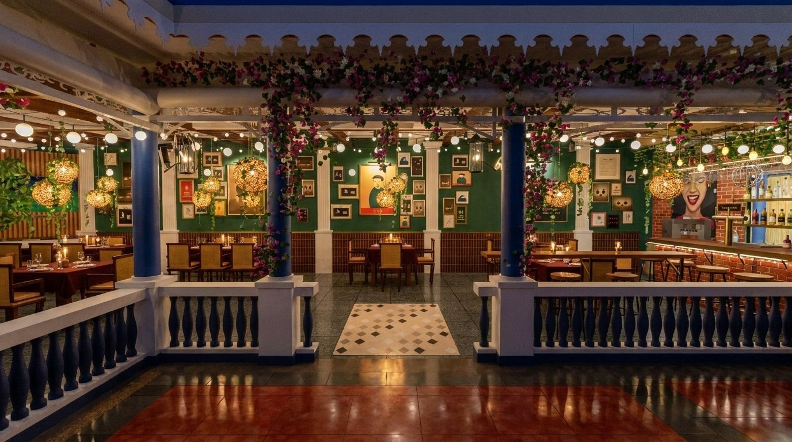
Looking in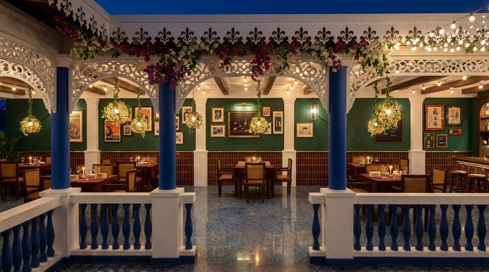
From the garden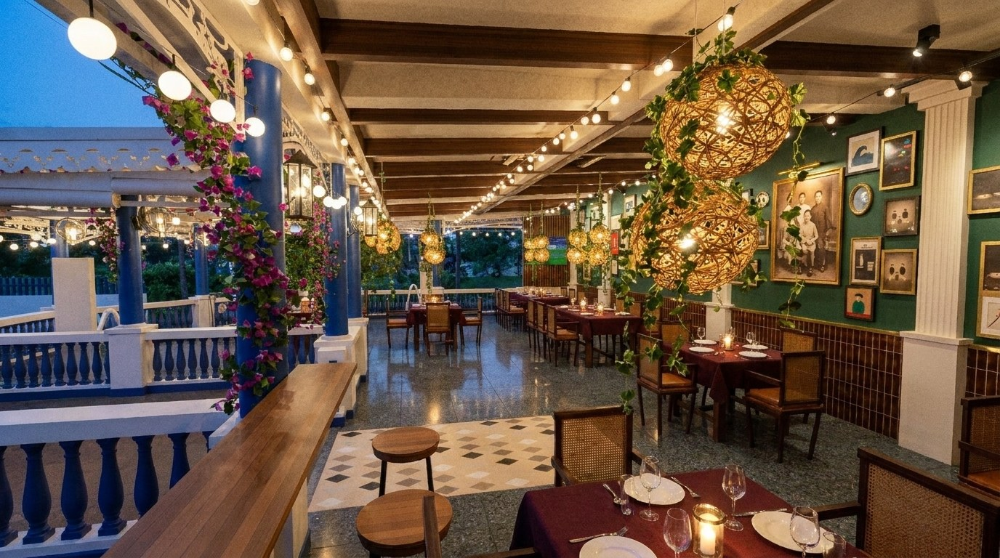
Dining room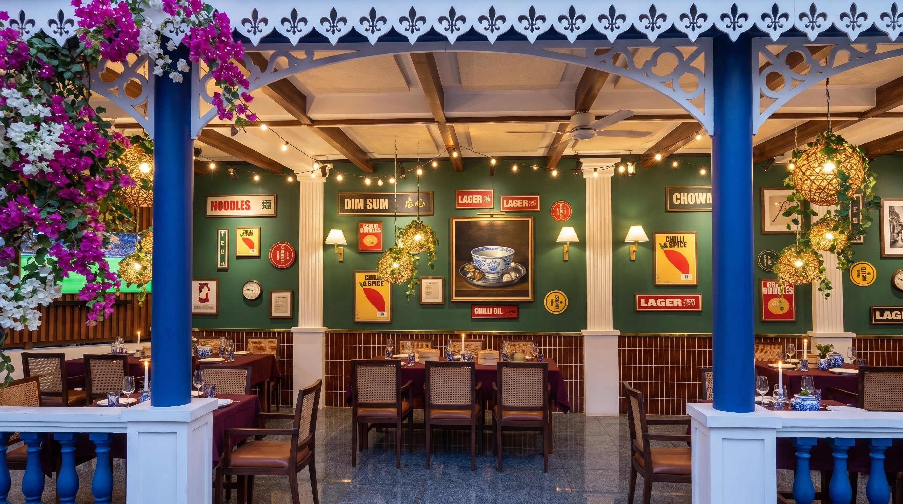
Gallery wall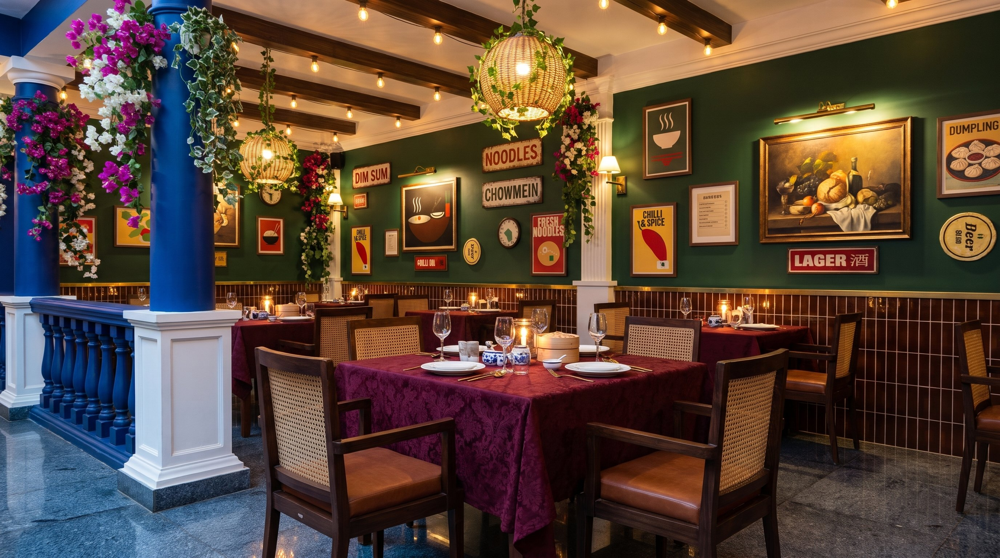
Table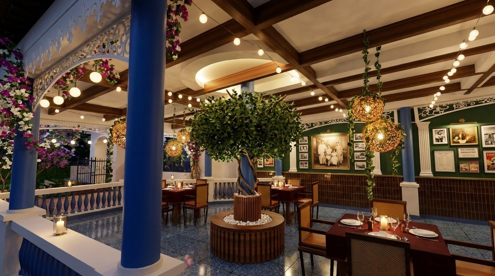
Centrepiece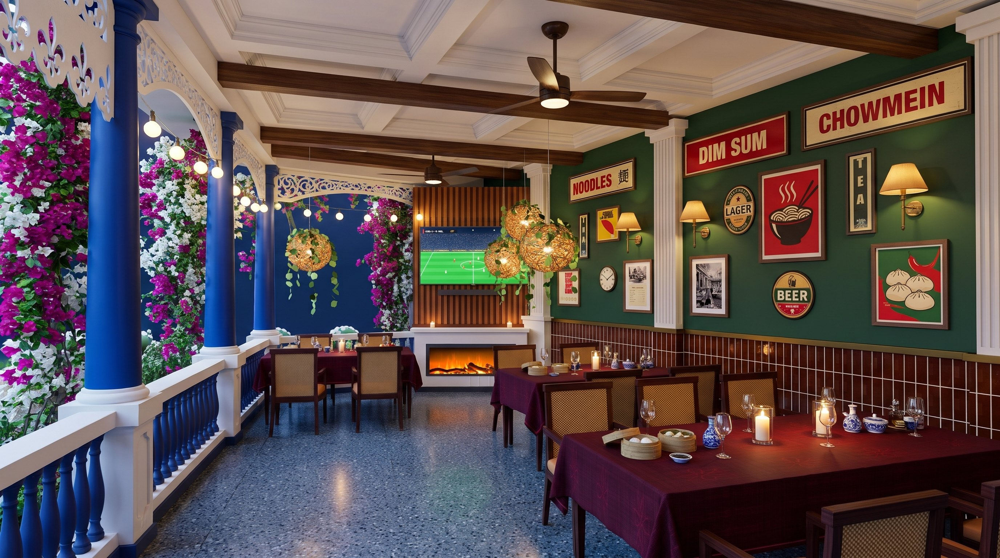
TV corner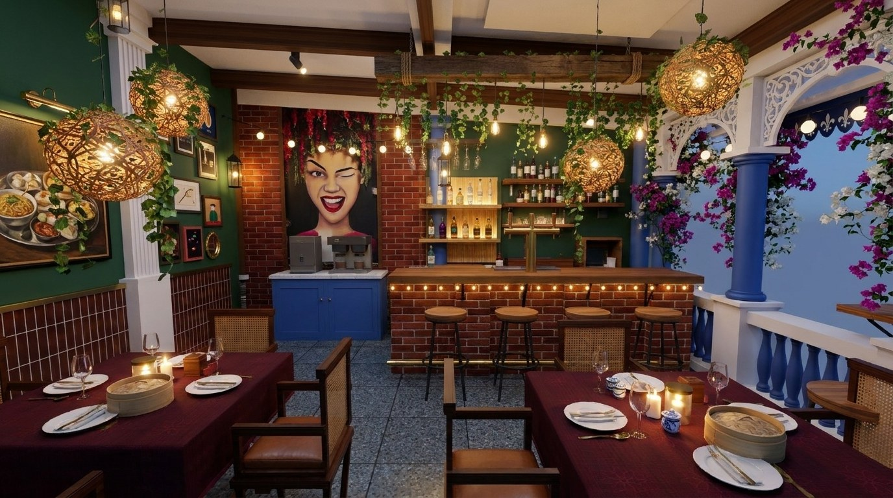
Bar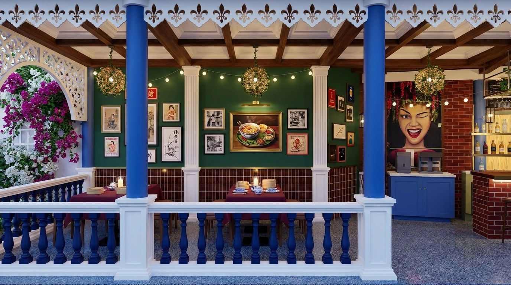
Coffee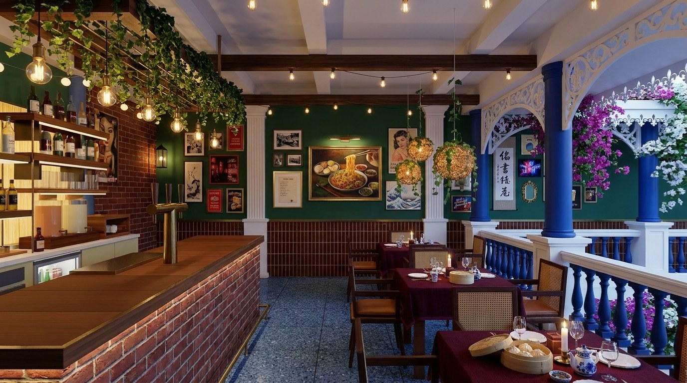
Behind the bar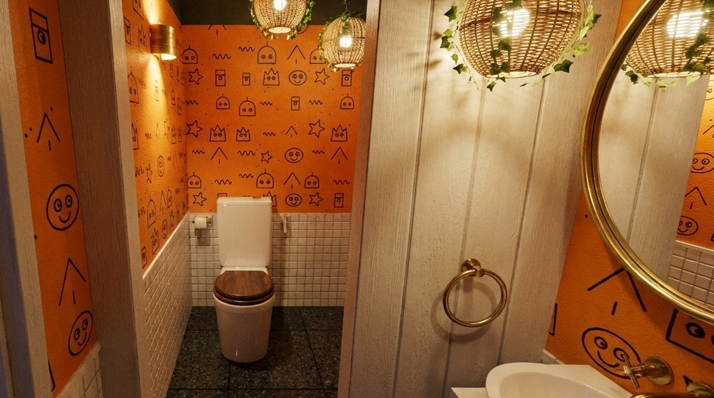
WashroomFrom the village road through the gate, past the garden and under the fairy lights to the landing.
The gateway keeps its Goan whitewash and blue gable, and gets a thick mound of bougainvillea spilling down one pier onto the compound wall.
| Gateway | Fresh lime-white, gable in the column blue, the sign board lit by two small brass lights |
|---|---|
| Planting | Magenta and white bougainvillea trained over the arch on stainless wire; pruned after each flowering to keep the opening clear |
| Gates | Black wrought iron, open in service hours; black wall lanterns either side, 2700 K |
The first green after the gate: lawn, palms and white flowers, with the fairy-light canopy and the glowing hall behind.
| Planting | Lawn in a laterite kerb, areca palms, white frangipani, a clipped hedge |
|---|---|
| Light | Warm spike uplights at each palm, 2200 K, IP67 |
Turn left past the garden onto the narrow path: a canopy of warm fairy lights strung straight from the three lamp posts to the balcony roof, with no frame, and wicker orbs and brass lanterns among them.
| Fairy lights | Warm micro LED strands on fine stainless wires, about every 12 cm, IP65, on a timer |
|---|---|
| Hanging | Ivy-wrapped wicker orbs (outdoor synthetic rattan) and hexagonal brass lanterns, all 2.1 m or more above the path |
The hall front: blue columns, navy balustrade, white fretwork and bougainvillea all along the eave.
The front of the hall is already handsome. Bougainvillea along the whole eave and down the entrance columns turns it into the picture people take.
| Bougainvillea | Magenta with some white, trained along the eave over the fretwork and down both entrance columns |
|---|---|
| Landing | Polished red-oxide with grey kota border; terracotta urns with areca palms |
| Eaves | White fleur-de-lis valance and arched fretwork freshened in lime white |
Through the opening the whole story is visible at once: the gallery wall, the lit orbs and the brick bar glowing at the far end.
| Door | Kilim runner in the opening; clear PVC curtains on every open side for the monsoon |
|---|---|
| Step | Contrasting anti-slip nosing on the step up from the landing |
| Photo spot | A small brass CE monogram plaque on the entrance column under the bougainvillea; the opening stays clear of furniture; a jasmine reed diffuser on a teak bracket beside it; a coir mat at the step |
From the garden the hall reads as one long lantern: the eave of flowers above, the warm room below.
| Drinking ledge | A 30 cm teak ledge along the inside of the balustrade with three high stools (35 covers in all) |
|---|
A bottle-green hall with a gallery wall that tells the story of Indo-Chinese food, ivy orbs over every table, and a tree in the middle.
Tables in burgundy linen under pairs of ivy-wrapped wicker orbs, each throwing a warm pool on its table.
| Covers | 5 tables for 4, 2 family tables for 6, 3 stools at the ledge = 35 (the cap) |
|---|---|
| Chairs | Dark walnut frames, woven cane backs, cognac leather-look seats in marine vinyl |
| Tables | Heavy burgundy cotton-linen cloths at dinner; bare teak with a linen runner at lunch |
| Lights | Ivy wicker orbs in pairs over each table, 2200 K, on their own dimmer |
| Acoustics | Off-white acoustic felt panels in the ceiling coffers |
| Fans | Quiet ceiling fans with dark walnut blades in the coffers; they also keep mosquitoes off |
| Table kit | Bamboo dim sum steamer, two blue-and-white porcelain chilli and soy pots, brass chopstick rests and a red lacquer bill box on every table |
The one solid wall tells the story of Indo-Chinese food and pan-Asian culture, hung tight in thin gilt frames, with no place names anywhere.
| Statement | A large dark oil still life of a blue-and-white Chinese bowl of noodles beside a steel thali and a red chilli-sauce bottle, under a brass picture light: two kitchens on one table |
|---|---|
| Around it | Old black-and-white photos of a small Chinese eating house, red bilingual signboards, a typed old menu card, a 1930s calendar-girl poster, a woodblock wave, ink-brush bamboo and plum blossom, 客家 calligraphy, vintage Asian lager adverts, neon street photos, festival lanterns |
| Frames | Mostly thin gilt, about a quarter black lacquer, one cinnabar red per bay; about 9 cm gaps, with room to breathe |
| Wall | Bottle green above glossy chocolate-brown vertical stacked tile to 1 m (laid over the old tiles), brass rail between; warm adjustable spots wash each bay |
The close-up guests will photograph: burgundy linen, candle, cane and cognac, the orb glowing above.
| Setting | White plates, wine glasses, a candle jar; matte black cutlery |
|---|---|
| Light | About 50–80 lux at the table, no bare bulb in a seated eye line |
The middle pillar becomes the heart of the room: a faux ficus with a braided trunk climbing the column into a wide canopy, under a warm glowing cove.
| Tree | High-grade artificial ficus, about 3 m canopy, fire-retardant leaves |
|---|---|
| Planter | Round slatted teak, 1.25 m across, white pebbles |
| Light | Warm cove light in the ceiling above |
One screen only, set on the diagonal of the corner, with a log-effect fireplace glowing under it.
| Screen | 65 in on a tilting arm on a slatted teak panel |
|---|---|
| Fireplace | Linear LED log-effect electric fireplace in a white mantel console; flame effect only |
Exposed red brick, lit bottle shelves at arm's reach, Edison bulbs and ivy, and a coffee station under the winking-woman mural.
The bar keeps its brick: the tan ply comes off and the brick is cleaned and sealed. Above it, a reclaimed beam with ivy and Edison bulbs.
| Counter | Existing red brick, sealed; thick teak top on black iron brackets with tiny warm bulbs along its edge; brass foot rail |
|---|---|
| Above | Reclaimed timber beam on black chains, rope lashings, trailing ivy, Edison bulbs on long drops |
| Back bar | Bottle wall of chunky teak shelves on iron brackets, lit from below; three craft taps on one brass font |
| Stools | Four teak seats on black iron frames |
Beside the bar, on the same red brick: a royal-blue panelled cabinet, the same blue family as the pillars, with the coffee kit, under a painted mural of a winking woman whose hair is a cascade of red hanging flowers.
| Cabinet | Royal-blue panelled with brass knobs, white marble top |
|---|---|
| Coffee | Twin filter-coffee brewer and a hot-water urn; water line, two 16 A sockets |
| Wall | Exposed red brick as the bar; mural painted by a local artist in this style, with real hanging artificial wisteria above for depth |
The working side: backlit bottle shelves, glassware, the cooler and glass-washer within reach.
| Lighting | Warm LED under every shelf, 2700 K, never cool white |
|---|
A small closed room, so it can be the one loud surprise.
Bright orange with black hand-drawn doodles over white tile: a surprise that gets photographed.
| Walls | Orange, freehand black paint-pen doodles by a local artist, sealed with matt varnish |
|---|---|
| Layout | 70 cm door, basin on the right, partition with a 70 cm opening, WC at the end |
| Amenities | Amber glass hand wash and lotion bottles, a small framed house-rules print, an extractor fan for the Goa humidity |
The hall is open on three sides, so everything gets monsoon humidity and salt air.